interfaces package¶
Submodules¶
interfaces.deflationlib module¶
- interfaces.deflationlib.arnoldi(A, b, x0=None, tol=1e-05, maxiter=1000, inner_m=30)[source]¶
Computes an orthonormal basis to get the approximated eigenvalues (Ritz eigenvalues) and eigenvector.
The basis comes from a Gram-Schmidt orthonormalization of the Krylov subspace defined as:
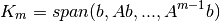
at the
 -th iteration.
-th iteration.Parameters
- A : {sparse matrix , linear operator}
matrix we want to approximate eigenvectors;
- b : {array}
array to build the Krylov subspace ;
- x0 : {array}
initial guess vector to compute residuals;
- tol : {float}
tolerance threshold to the Ritz eigenvalue computation;
- maxiter : {int}
to validate the result one can compute maxiter times the eigenvalues, to seek the stability of the algorithm;
- inner_m : {int}
maximum number of iterations within the Arnoldi algorithm,
Warning
inner_m <=N_pix
Returns
- w : {list of arrays}
the orthonormal basis m x N_pix;
- h : {list of arrays}
the elements of the 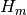 Hessenberg matrix. At the m-th iteration 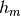 has got 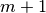 elements.
- interfaces.deflationlib.build_Z(z, y, w, eps)[source]¶
Build the deflation matrix
 . Its columns are the 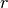
selected eigenvectors 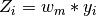 s.t. their eigenvalues
. Its columns are the 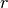
selected eigenvectors 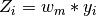 s.t. their eigenvalues  are smaller than a certain threshold eps.
are smaller than a certain threshold eps.Parameters
- z : {array}
eigenvalues of ;
- y : {list of arrays}
eigenvectors of ;
- w : {list of arrays}
orthonormal basis (computed with the Arnoldi algorithm);
- eps : {float}
threshold to select the smallest eigenvalues.
Returns
- Z : {matrix}
deflation subspace matrix;
- r : {int}
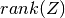.
interfaces.linearoperators module¶
- class interfaces.linearoperators.BlockDiagonalLO(A, n, pol=1)[source]¶
Bases: linop.linop.LinearOperator
Explicit implementation of 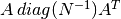, in order to save time in the application of the two matrices onto a vector (in this way the leading dimension will be 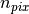 instead of 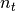).
Note
it is initialized as the BlockDiagonalPreconditionerLO since it involves computation with the same matrices.
- class interfaces.linearoperators.BlockDiagonalPreconditionerLO(A, n, pol=1)[source]¶
Bases: linop.linop.LinearOperator
Standard preconditioner defined as:
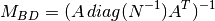
where
 is a SparseLO operator.
Such inverse operator could be easily computed given the structure of the
matrix . It could be sparse in the case of Intensity only analysis (pol=1),
block-sparse if polarization is included (pol=3,2).
is a SparseLO operator.
Such inverse operator could be easily computed given the structure of the
matrix . It could be sparse in the case of Intensity only analysis (pol=1),
block-sparse if polarization is included (pol=3,2).Parameters
- n:{int}
the size of the problem, npix;
- A:{:class:SparseLO}
the linear operator related to the pointing matrix. Its members (counts, masks, sine, cosine, etc... ) are needed to explicitly compute the inverse of the blocks of 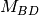.
- pol:{int}
the size of each block of the matrix.
- class interfaces.linearoperators.BlockLO(blocksize, t, offdiag=False)[source]¶
Bases: interfaces.blkop.BlockDiagonalLinearOperator
Derived class from blkop.BlockDiagonalLinearOperator. It basically relies on the definition of a block diagonal operator, composed by nblocks diagonal operators. If it does not have any off-diagonal terms (default case ), each block is a multiple of the identity characterized by the values listed in t and therefore is initialized by the BlockLO.build_blocks() as a linop.DiagonalOperator.
Parameters
- blocksize : {int or list }
size of each diagonal block, it is : 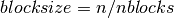.
- t : {array}
noise values for each block
- offdiag : {bool, default False}
strictly related to the way the array t is passed (see notes ).
Note
- True : t is a list of array,
shape(t)= [nblocks,bandsize], to have a Toeplitz band diagonal operator, 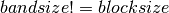
- False : t is an array, shape(t)=[nblocks].
each block is identified by a scalar value in the diagonal.
- build_blocks()[source]¶
Build each block of the operator either with or without off diagonal terms. Each block is initialized as a Toeplitz (either band or diagonal) linear operator.
- self.diag: {numpy array}
- the array resuming the 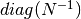.
- class interfaces.linearoperators.CoarseLO(Z, Az, r, apply='LU')[source]¶
Bases: linop.linop.LinearOperator
This class contains all the operation involving the coarse operator
 .
In this implementation is always applied to a vector wiht
its inverse : 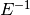.
When initialized it performs either an LU or an eigenvalue decomposition
to accelerate the performances of the inversion.
.
In this implementation is always applied to a vector wiht
its inverse : 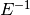.
When initialized it performs either an LU or an eigenvalue decomposition
to accelerate the performances of the inversion.Parameters
- Z : {np.matrix}
deflation matrix;
- A : {SparseLO}
to compute vectors 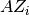;
- r : {int}
, dimension of the deflation subspace;
- apply:{str}
- LU: performs LU decomposition,
- eig: compute the eigenvalues and eigenvectors of E.
- mult(v)[source]¶
Perform the multiplication of the inverse coarse operator 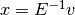. It exploits the LU decomposition of
to solve the system 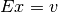.
It first solves 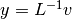 and then 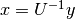.
- mult_eig(v)[source]¶
Matrix vector multiplication with computed via setting_inverse_w_eigenvalues().
- class interfaces.linearoperators.DeflationLO(z)[source]¶
Bases: linop.linop.LinearOperator
This class builds the Deflation operator (and its transpose) from the columns of the matrix Z.
Parameters
- z : {np.matrix}
the deflation matrix. Its columns are read as arrays in a list self.z.
- class interfaces.linearoperators.FilterLO(size, subscan_nsample, pix_samples)[source]¶
Bases: linop.linop.LinearOperator
When applied to vector, this operator filters out its components by removing a constant (its mean value) within a subscan interval.
Parameters
- size: {int}
the size of the input array;
- subscan_nsample: {array}
contains the size of each chunk of the samples which has to be processed. 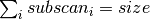.
- pix_samples: {array}
the same argument as in SparseLO, encoding all the pixels observed during observations.
Note
To be consistent with tha analysis FilterLO does not take into account all the flagged pixels.
- class interfaces.linearoperators.InverseLO(A, method=None, preconditioner=None)[source]¶
Bases: linop.linop.LinearOperator
Construct the inverse operator of a matrix
, as a linear operator.Parameters
- A : {linear operator}
the linear operator of the linear system to invert;
- method : {function }
the method to compute A^-1 (see below);
- P : {linear operator } (optional)
the preconditioner for the computation of the inverse operator.
- converged[source]¶
provides convergence information:
- 0 : successful exit;
- >0 : convergence to tolerance not achieved, number of iterations;
- <0 : illegal input or breakdown.
- isconverged(info)[source]¶
It returns a Boolean value depending on the exit status of the solver.
Parameters
- info : {int}
output of the solver method (usually scipy.sparse.cg()).
- method[source]¶
The method to compute the inverse of A. It can be any scipy.sparse.linalg solver, namely scipy.sparse.linalg.cg(), scipy.sparse.linalg.bicg(), etc.
- class interfaces.linearoperators.SparseLO(n, m, pix_samples, phi=None, pol=1, w=None, pixel_schema=None, threshold_cond=1000.0)[source]¶
Bases: linop.linop.LinearOperator
Derived class from the one from the LinearOperator in linop. It constitutes an interface for dealing with the projection operator (pointing matrix).
Since this can be represented as a sparse matrix, it is initialized by an array of observed pixels which resembles the (i,j) positions of the non-null elements of the matrix,``obs_pixs``.
Note
During its initialization, a private member function initializeweights() is called to precompute arrays needed for the explicit implementation of BlockDiagonalPreconditionerLO. Moreover it masks all the unobserved or pathological pixels which won’t be taken into account, via the functions repixelization() and flagging_samples().
Parameters
- n : {int}
number of columns;
- m : {int}
number of rows;
- pix_samples : {array}
list of pixels observed in the time domain, (or the non-null elements in a row of 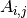);
- pol : {int,[default pol=1]}
process an intensity only (pol=1), polarization only pol=2 and intensity+polarization map (pol=3);
- phi: {array, [default None]}
array with polarization angles (needed if pol=3,2);
- w: {array, [default None]}
array with noise weights , 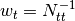, computed by BlockLO.build_blocks(). If it is not set SparseLO.initializeweights() assumes it to be a numpy.ones() array;
- pixel_schema:{array}
Map from the internal pixelization to an external one, i.e. HEALPIX, it has to be modified when pathological pixels are not taken into account; Default is numpy.arange(npix)(), i.e. identity map;
- threshold_cond: {float}
set the condition number threshold to mask bad conditioned pixels (it’s used in polarization cases). Default is set to 1.e3.
- initializeweights(phi, w)[source]¶
Pre-compute the quantitities needed for the implementation of 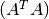 and to masks bad pixels.
Parameters
- counts :
how many times a given pixel is observed in the timestream;
- mask:
mask either unobserved (counts=0) or bad constrained pixels (see the pol=3,2 following cases) ;
- If pol=2:
the matrix is symmetric and block-diagonal, each block can be written as :
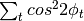 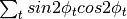 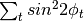 the determinant, the trace are therefore needed to compute the eigenvalues of each block via the formula:
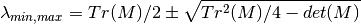
being
 a 2x2 matrix.
The eigenvalues are needed to define the mask of bad constrained pixels whose
condition number is 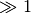.
a 2x2 matrix.
The eigenvalues are needed to define the mask of bad constrained pixels whose
condition number is 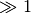.
- If pol=3:
each block of the matrix is a 3 x 3 matrix:
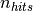 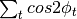 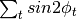 We then define the mask of bad constrained pixels by both considering the condition number similarly as in the pol=2 case and the pixels whose count is 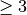.
- mult(v)[source]¶
Performs the product of a sparse matrix 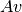, with
 a numpy array (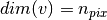) .
a numpy array (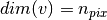) .It extracts the components of
corresponding to the non-null elements of the operator.
- mult_iqu(v)[source]¶
Performs the product of a sparse matrix , with v a numpy array containing the three Stokes parameters [IQU] .
Note
Compared to the operation mult this routine returns a -size vector defined as:
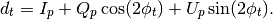
with
 is the pixel observed at time
is the pixel observed at time  with polarization angle
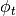.
with polarization angle
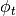.
- mult_qu(v)[source]¶
Performs 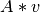 with
being a polarization vector.
The output array will encode a linear combination of the two Stokes
parameters, (whose components are stored contiguously).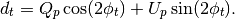
- repixelization()[source]¶
Performs pixel reordering by excluding all the unbserved or pathological pixels.
- class interfaces.linearoperators.ToeplitzLO(a, size)[source]¶
Bases: linop.linop.LinearOperator
Derived Class from a LinearOperator. It exploit the symmetries of an dim x dim Toeplitz matrix. This particular kind of matrices satisfy the following relation:
Therefore, it is enough to initialize A by mean of an array a of size = dim.
Parameters
- a : {array, list}
the array which resembles all the elements of the Toeplitz matrix;
- size : {int}
size of the block.
Module contents¶
This module contains the 2 main libraries for COSMOMAP2